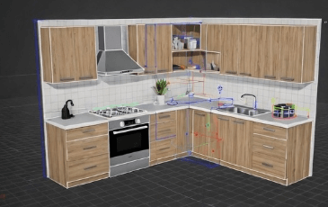
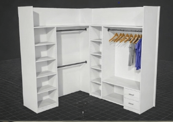
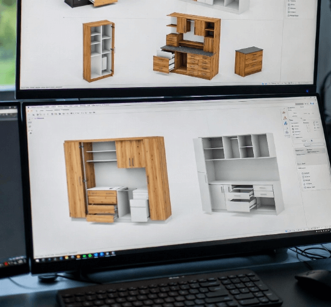
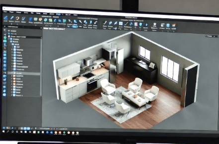

3D-luonnokset ja suunnittelu
Näe lopputulos ennen ensimmäistä sahausleikkausta Joensuussa ja Pohjois-Karjalassa
Visualisoi unelmasi ennen toteutusta Joensuussa
3D-suunnittelu on modernin puusepäntyön tärkeä työkalu. Sen avulla voit nähdä tarkalleen, miltä kaluste tai tila tulee näyttämään jo ennen valmistuksen aloittamista. Luomme realistiset 3D-visualisoinnit, joissa näkyvät materiaalit, värit, mitat ja yksityiskohdat Joensuun ja Pohjois-Karjalan kohteisiin.
3D-suunnittelun avulla voit tehdä muutoksia helposti ja nähdä eri vaihtoehtojen vaikutukset. Voit kokeilla eri materiaaleja, värejä ja ratkaisuja virtuaalisesti, ennen kuin teemme lopullisen päätöksen. Tämä säästää aikaa, rahaa ja varmistaa, että lopputulos vastaa täysin odotuksiasi.
Mitä suunnittelemme 3D:nä?
- Keittiöt
- Mittatilauskalusteet
- Kiintokalusteet
- Koko tila
Miksi valita 3D-suunnittelu?
3D-suunnittelu on investointi, joka maksaa itsensä takaisin:
-
Säästät rahaa
Virheet havaitaan ennen valmistusta, eikä kalliita korjauksia tarvitse tehdä jälkikäteen.
-
Säästät aikaa
Päätökset ovat helpompia, kun näet lopputuloksen etukäteen selkeästi.
-
Saat juuri mitä haluat
Ei arvailua tai epävarmuutta, vaan varmuus siitä miltä valmis kokonaisuus näyttää.
-
Vältät ristiriidat
Kaikilla on sama käsitys lopputuloksesta, mikä vähentää väärinymmärryksiä projektin aikana.
-
Ammattimaisuus
3D-suunnittelu osoittaa, että projekti toteutetaan huolellisesti ja tarkasti alusta asti.
Esimerkkejä 3D-suunnitelmista
Katso, miten realistisia visualisointimme ovat:

Moderni keittiösuunnitelma, jossa näkyvät kaappijako, työtasot, valaistus ja kulkureitit.

Vaatehuoneen 3D-malli, jossa hyllyjen, tankojen ja laatikostojen paikat on optimoitu käyttöön.

Kodinhoitohuoneen kaapistokokonaisuus, jossa on huomioitu säilytys, työskentelykorkeus ja ergonomia.

Koko tilan visualisointi, joka näyttää kalusteiden mittasuhteet, materiaalit ja yhtenäisen ilmeen.
Ammattimaiset työkalut
Käytämme alan parhaita 3D-suunnitteluohjelmia, jotka mahdollistavat tarkan mallinnuksen ja fotorealistiset renderöinnit. Ohjelmistot sisältävät laajat materiaalikirjastot, joten voimme näyttää juuri oikeat puulajit, värit ja pintakäsittelyt.
-
Fotorealistiset kuvat
Renderöinnit näyttävät lähes valokuvilta. Valaistus, varjot ja heijastukset ovat realistisia.
-
Tarkat mitat
Jokainen mitta on tarkka millimetriin. Suunnitelmat kelpaavat suoraan valmistukseen.
-
Virtuaalikävely
Isommissa projekteissa voit "kävellä" tilassa virtuaalisesti ja nähdä sen eri suunnista.
Suunnitteluprosessi
1. Kartoitus ja mittaus
Otamme tarkat mitat tilasta ja keskustelemme toiveistasi. Keräämme kaikki tarvittavat tiedot.
2. Luonnostelu
Teemme alustavia luonnoksia ja pohjapiirroksia. Käymme läpi eri vaihtoehtoja ja ratkaisuja.
3. 3D-mallinnus
Luomme yksityiskohtaisen 3D-mallin. Lisäämme materiaalit, värit ja valaistuksen mallettuun tilaan.
4. Visualisoinnit
Renderoimme realistiset kuvat useasta kulmasta. Saat korkealaatuiset kuvat, jotka näyttävät lopputuloksen.
5. Muutokset ja viimeistely
Käymme suunnitelmat läpi yhdessä. Teemme tarvittavat muutokset ja viimeistelyt.
6. Valmistuspiirustukset
Kun suunnitelma on valmis, teemme tarkat valmistuspiirustukset verstaalle.
Haluatko nähdä ideasi 3D:nä?
Ota yhteyttä, niin keskustellaan projektistasi. Ensimmäinen tapaaminen on maksuton, ja voimme tehdä alustavan luonnoksen jo ensimmäisessä tapaamisessa.
Pyydä 3D-suunnitelma